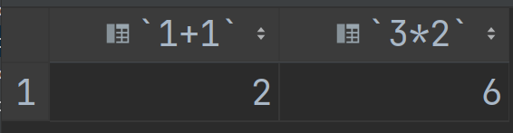
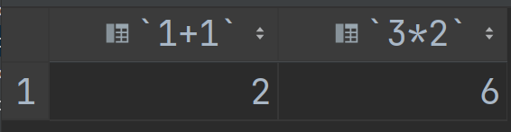
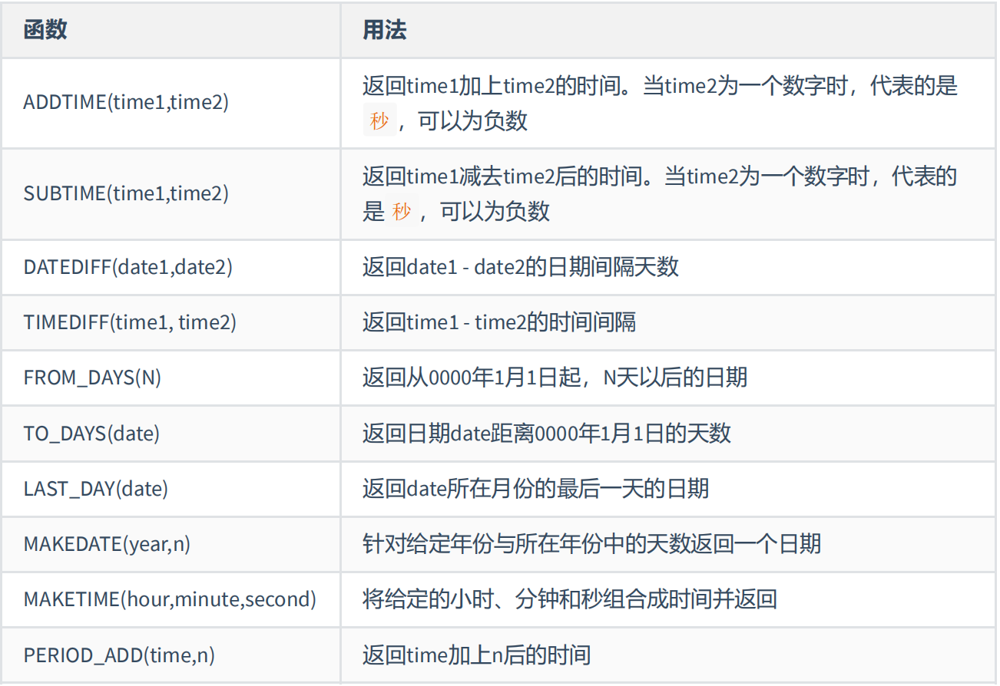
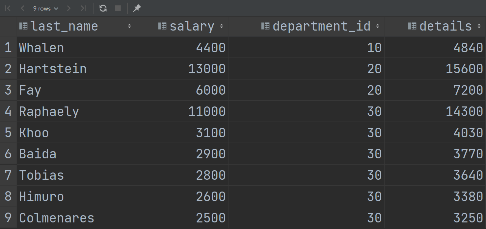
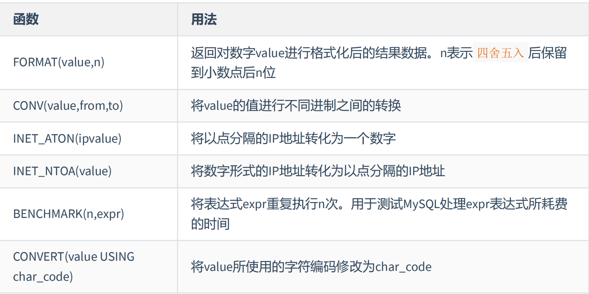
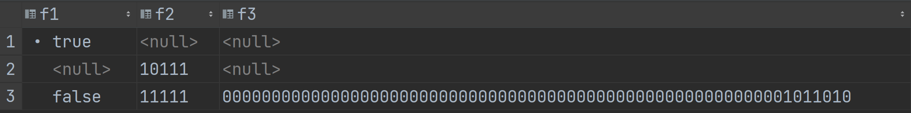
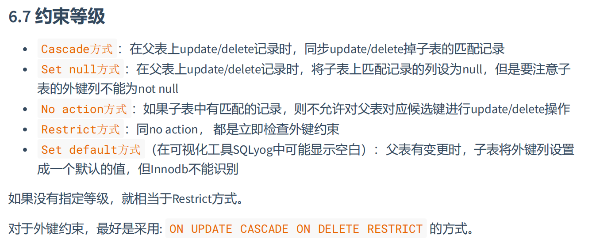

第一章 数据库概述及一些相关知识
1. 使用数据库的原因
持久化：含义是把数据保存到可掉电式存储设备中以供之后使用，将内存中的数据保存在硬盘上加以“固化”，持久化的主要作用是将内存中的数据存储在关系型数据库中。
数据库能更好地处理异质性数据。
2. 数据库与数据库管理系统
2.1 数据库的相关概念
DB：数据库（Database）
即存储数据的“仓库”，其本质是一个文件系统（实打实的文件，数据库文件）。它保存了一系列有组织的数据。
DBMS：数据库管理系统（Database Management System）
是一种操纵和管理数据库的大型软件，用于建立、使用和维护数据库，对数据库进行统一管理和控制。用户通过数据库管理系统访问数据库中表内的结构。
SQL：结构化查询语言（Structured Query Language）
专门用来与数据库通信的语言
2.2 数据库与数据库管理系统的关系
DBMS可以管理多个数据库。我们一般会针对每一个应用创建一个数据库。为保存应用中实体的数据，一般会在数据库中创建多个表，以保证程序中实体用户的数据。
3. RDBMS与非RDBMS
3.1 关系型数据库（RDBMS）
最古老的数据库类型，关系型数据库模型是把复杂的数据结构归结为简单的二元关系（二维表格形式）。
以行（row）和列（column）的形式存储数据，这一系列的行和列被称为表（table），一组表组成了一个库（database）
表与表之间的数据记录有关系（relationship）。现实世界中的各种实体以及实体之间的各种联系均用关系模型来表示。
优势：复杂查询，事务支持
3.2 非关系型数据库（非RDBMS）
可以看成传统关系型数据库的功能阉割版本，基于键值对存储数据，不需要经过SQL层的解析，性能非常高
3.2.1 非关系型数据库举例
键值型数据库
通过Key-Value键值的方式来存储数据，其中Key和Value可以是简单的对象，也可以是复杂的对象。Key作为唯一标识符，优点是查找速度快。缺点是无法像关系型数据库一样使用条件过滤（比如WHERE），如果不知道去哪里找数据，就要遍历所有的建，这就会消耗大量的计算。其典型使用场景是作为内存缓存，Redis是最流行的键值型数据库。
.jpg)
文档型数据库
此类数据库可以存放并获取文档，可以是XML、JSON等格式。在数据库中文档作为处理信息的基本单位，一个文档就相当于一条记录。MongoDB
搜索引擎数据库
核心原理是“倒排索引”。Elasticsearch
列式数据库
列式数据库是相对于行式存储的数据库，这样做的好处是可以大量降低系统的I/O，适合于分布式文件系统，不足之处在于功能相对有限，HBase
.jpg)
图形数据库
.jpg)
4. 关系型数据库设计的原则
- 数据表
- 将数据放到表中，表再放到库中
- 一个数据库可以有多个表，每个表都有一个名字，用来表示自己，表名具有唯一性
- 表，类似java中的“类”
4.1 表、记录、字段
- E-R（实体-联系）模型[描述的是表和表之间的关系]中有三个主要的概念：实体集、属性、联系集
- 一个实体集（class）对应于数据库中的一个表（table），一个实体（instance）则对应于数据库表中的一行（row），也成为一条记录（record）。一个属性对应于数据库表中的一列（column），也称为一个字段。
.jpg)
1 | ORM思想（Object Relational Mapping）体现 |
4.2 表的关联关系
四种：一对一关联、一对多关联、多对多关联、自我引用
4.2.1 一对一
A表中的一条记录对应B表中的另外一条记录
.jpg)
4.2.2 一对多关系
.jpg)
4.2.3 多对多
要表示多对多关系，必须创建第三个表，该表通常称为联接表，它将多对多关系划分为两个一对多关系，将这两个表的主键都插入到第三个表中。
.jpg)
4.2.4 自我引用
.jpg)
第二章 基本的SELECT语句
1. SQL分类
- DDL（数据定义语言），这些语句定义了不同的数据库、表、视图、索引等数据库对象，还可以用来创建、删除、修改数据库和数据表结构。（CREATE、DROP、ALTER、RENAME、TRUNCATE等），作用对象：数据库/表
- DML（数据操作语言），用于添加、删除、更新和查询数据库记录（行），并检查数据完整性。（INSERT、DELETE、UPDATE、SELECT（基础，最重要）），作用对象：行
- DCL（数据控制语言），用于定义数据库、表、字段（列）、用户的访问权限和安全级别。（GRANT、REVOKE、COMMIT、ROLLBAKE、SAVEPOINT），作用对象：数据库/表/列
或者把查询语言单列出来：DQL（数据查询语言）
2. SQL语言的规则与规范
2.1 基本规则
- SQL可以写在一行或者多行，各子句分行写，必要时缩进
- 每条命令以 ；结束
- 关键字不能缩写也不能分行
- 列的别名用双引号表示，不建议省略as
1 | USE dbtest2; |
2.2 SQL大小写规范
- Windows中对大小写不敏感
- Linux中对大小写敏感
数据库名、表名、表别名、字段名、字段别名等都小写
SQL关键字、函数名、绑定变量等都大写。
2.3 注释
1 | # 这是一个单行注释，MySQL特有 |
2.4 命名规则（暂时了解）
.jpg)
2.5 数据导入指令
1 | # source 文件的全路径名 |
3. 基本的SELECT语句
3.1 SELECT…FROM
1 | # 1.最基本的SELECT语句，SELECT 字段1(列1)，字段2(列2),....FROM 表名 |
 

1 | SELECT * FROM employees;# *表示所有的字段（列） |
3.2 列的别名
1 | # 可以直接在原列名之后写上别名，也可以加一个关键字AS（alias），也可以将别名用""引起来，用""是为了防止有点别名中有空格引起歧义 |
3.3 去除重复行
1 | # 默认情况下，查询会返回全部行，包括重复行,在SELECT语句中使用关键字DISTINCT去除重复行 |
在使用distinct时，null也被视为一类数据，null存在于多行中时，也被合并为一条null数据
3.4 空值参与运算
1 | # 4.空值参与运算 |
1 | # 实际问题的解决方案，引入IFNULL |
3.5 着重号
1 | # 当表中的字段、表名和保留字、数据库系统或者常用方法冲突的时候，用``（着重号）引起来 |
3.6 查询常数
1 | # 效果为在SELECT查询结果中增加一列固定的常数列。这列的取值是我们制定的，而不是从数据表中动态取出的 |

4. 显示表结构
1 | # DESC或DESCRIBE |
5. 过滤数据
语法：
1 | SELECT 字段1,字段2 |
1 | # 查询90号部门的员工信息 |
1 | # 查询last_name为'King'的员工的信息 |
第三章 运算符
1. 算术运算符
1.1 加法与减法运算符
1 | SELECT 100, 100 + 0, 100 - 0, 100 + 50, 100 + 50 * 30, 100 + 35.5, 100 - 35.5 |
1 | SELECT 100 + '1' # 在MySQL中表示数相加,此时会将字符串转换为数值（隐式转换） |
1 | SELECT 100 + 'a' # 这里的字符视为0 |
.jpg)
1.2乘法与除法运算
1 | SELECT 100, 100 * 1, 100 * 1.0, 100 / 1.0, 100 / 2, 100 + 2 * 5 / 2, 100 / 3, 100 DIV 0 |
.jpg)
1.3 求模（余）运算
1 | SELECT 12 % 3, 12 % 5 |
1 | # 查询员工id为偶数的员工信息 |
2. 比较运算符
1 | SELECT 1=2, 1!=2, 1='1',1='a', 'a'='a', 'a'='b' |
1 | SELECT last_name,salary |
1 | # <=>安全等于，为了解决对NULL进行判断的问题，在两个操作数均为NULL时，其返回值为1 |
sql不识别=null和<>null，只能使用is null或is not null判断null值。
.jpg)
1 | #① IS NULL\IS NOT NULL\ISNULL |
1 | # ②LESAT()\GREATEST最大/小值 |
1 | # ③BETWEEN AND(包含边界)(范围查找) |
1 | # 查询工资不在6000到8000的员工信息 |
1 | # ④IN (set)\NOT IN (set)(离散值查找) |
1 | # 查询工资不是6000、7000、8000的员工信息 |
1 | # ⑤LIKE：模糊查询 |
1 | # 查询last_name中以字符’a‘开头的员工信息 |
1 | # 查询last_name中包含字符’a‘且包含字符'e'的员工信息 |
1 | # 查询第二个字符是'a'的员工信息 |
1 | # 查询第二个字符是'_'且第三个字符是'a'的员工信息，需要使用转义字符 |
1 | # ⑥ REGEXP\RLIKE:正则表达式 |
3. 逻辑运算符
.jpg)
1 | # 3.逻辑运算符 NOT,AND,OR,XOR(追求的是异) |
4. 位运算符
.jpg)
1 | # 4.位运算符 &,|,^,~,>>,<< |
第四章 排序与分页
1. 排序数据
使用ORFER BY子句排序
ASC（升序），DESC（降序）
ORDER BY子句在SELECT语句的结尾
1 | # 按照salary从高到低的顺序显示员工信息 |
1 | # 我们可以使用列的别名进行排序,列的别名只能在ORDER BY中使用，不能在WHERE中使用 |
1 | # 强调格式：WHERE需要声明在FROM后，ORDER BY之前 |

1 | # 二级排序(多列排序) |
2. 分页
1 | # 2.分页 |
1 | # 2.2 WHERE.....ORDER BY....LIMIT声明顺序 |
1 | # 表中有107条数据，我们只想要显示第32、33条数据怎么办？ |
1 | # 查询员工表中工资最高的员工信息 |
第五章 多表查询
多表查询、也称为关联查询，指两个或更多表一起完成查询操作
1. 熟悉多个表
.jpg)
2. 笛卡尔积的理解
笛卡尔积的错误会在下面条件下产生：
- 省略多个表的连接条件（或关联条件）
- 连接条件（或关联条件）无效
- 所有表中的所有行互相连接
1 | # 2. 出现笛卡尔积的错误 |
1 | # 3./4./5.多表查询的正确方式：需要有连接条件,如果查询语句中出现了多个表中都存在的字段、则必须指明此字段所在的表 |
1 | # 6.结论：如果有n个表，需要有至少n-1个连接条件，否则就会出现笛卡尔积的错误 |
3. 多表查询的分类
3.1 等值连接 VS 非等值连接
以下均采用SQL99写法
1 | # 等值连接 |
3.2 自连接 VS 非自连接
1 | # 非自连接（不同表之间） |
3.3 内连接 VS 外连接
1 | # 内连接语法 |
1 | # 内连接 |
1 | # 外连接：合并具有同一列的两个以上的表的行，结果集中除了包含一个表与另一个表匹配的行之外， |
1 | # 查询“所有”员工的last_name,department_name信息 |
1 | # 左外连接 |
1 | # 右外连接 |
4. UNION的使用
合并查询结果 利用UNION关键字，可以给出多条SELECT语句，并将它们的结果组合成单个结果集。合并时，两个表对应的列数和数据类型必须相同，并且相互对应。各个SELECT语句之间使用UNION或UNION ALL关键字分隔。
1 | # 语法格式 |
1 | # UNION：会执行去重的操作 |
5. 七种JOIN的实现
1 | # 1：左外连接 |
6. SQL99语法新特性（了解）
6.1 自然连接
自然连接会帮你自动查询两张连接表中“所有相同”的字段，然后进行等值连接
1 | SELECT e.employee_id, e.last_name, d.department_name |
6.2 USING连接
使用 USING 指定数据表里的 同名字段 进行等值连接。但是只能配合JOIN一起使用
1 | SELECT e.employee_id,e.last_name,d.department_name |
第六章 单行函数
1. 两种SQL函数
单行函数 、 聚合函数（或分组函数）

单行函数
- 操作数据对象
- 接受参数返回一个结果
- 只对一行进行变换
- 每行返回一个结果
- 可以嵌套
- 参数可以是一列或一个值
2. 数值函数
2.1 基本函数
1 | # 基本操作 |
1 | # 单行函数可以嵌套 |
2.2 角度与弧度互换函数
1 | SELECT RADIANS(30),RADIANS(45),RADIANS(60),RADIANS(90),DEGREES(pi()/6),DEGREES(pi()/4),DEGREES(pi()/3),DEGREES(pi()/2) |
2.3 三角函数
1 | # 三角函数 |
2.4 指数与对数
1 | # 指数和对数 |
2.5 进制间的转换
1 | # 进制间的转换 |
3. 字符串函数

1 | SELECT ASCII('A'),CHAR_LENGTH('hello'),CHAR_LENGTH('我们'),LENGTH('hello'),LENGTH('我们') |
1 | # xxx worked for yyy |
1 | SELECT CONCAT_WS('-',employee_id,last_name,first_name) "操作后的员工号-姓-名" |
1 | # 字符串的索引是从1开始的 |
1 | SELECT REPLACE(last_name,'a','b') "把所有员工的姓中字母a替换为字母b" |
1 | SELECT UPPER(last_name) "大写的last_name" |
1 | SELECT LEFT(last_name,2),RIGHT(last_name,3) |
1 | # LPAD：实现右对齐效果 |
1 | SELECT TRIM(' hello '),TRIM('o' FROM 'oohello') |
1 | SELECT REPEAT(employee_id,3) "重复三次employee_id" |
1 | SELECT STRCMP(last_name,first_name) "比较姓和名的字符串大小" |
1 | SELECT SUBSTR(last_name,2,2) "返回子字符串", LOCATE('a',last_name) "字母a在last_name中首次出现的位置" |
1 | SELECT REVERSE(last_name) "字符串反转" |
1 | SELECT employee_id, NULLIF(LENGTH(last_name), LENGTH(first_name)) "compare" |
4.日期和时间函数
4.1 获取日期、时间
1 | SELECT CURDATE(),CURTIME(),NOW(),SYSDATE() |
4.2 日期与时间戳的转换
1 | SELECT UNIX_TIMESTAMP('2022-10-22 12:23:43'),FROM_UNIXTIME(2345656611) |
4.3 获取月份、星期、星期数、天数等函数
1 | SELECT YEAR(CURDATE()),MONTH(CURDATE()),DAY(CURDATE()), |
4.4 日期的操作函数
1 | SELECT EXTRACT(SECOND FROM NOW()) |
4.5 时间和秒钟转换的函数
1 | SELECT TIME_TO_SEC(CURTIME()),SEC_TO_TIME(87664) |
4.6 计算日期和时间的函数
1 | SELECT NOW(),DATE_ADD(NOW(),INTERVAL 1 YEAR ) |
1 | SELECT DATE_ADD(hire_date,INTERVAL 1 YEAR ) |

4.7 日期的格式化与解析

上述 非GET_FORMAT 函数中fmt参数常用的格式符：

GET_FORMAT函数中date_type和format_type参数取值如下：
1 | SELECT DATE_FORMAT(CURDATE(),'%Y-%M-%D'),DATE_FORMAT(CURDATE(),'%Y-%m-%d'), |
5. 流程控制函数
1 | # 4.1 IF(value,value1,value2) |
1 | SELECT last_name,commission_pct,IF(commission_pct IS NOT NULL ,commission_pct,0) "details", |

1 | # 4.2 IFNULL(value1, value2) |
1 | # 4.3 CASE WHEN 条件1 THEN 结果1 WHEN 条件2 THEN 结果2 |
1 | # 4.4 CASE expr WHEN 常量值1 THEN 值1 WHEN 常量值1 THEN |

6. 加密与解密函数
1 | SELECT MD5('wyh'),SHA('wyh') |
7. MySQL信息函数
1 | SELECT VERSION(),CONNECTION_ID(),DATABASE(),USER(),CHARSET('王宇涵'),COLLATION('王宇涵') |
8. 其他函数

1 | # BENCHMARK()用于测试表达式的执行次效率、 |
第七章 聚合函数
1. 聚合函数定义
聚合函数作用于一组数据，并对一组数据返回一个值。
聚合函数类型
- AVG()
- SUM()
- MAX()
- MIN()
- COUNT()
聚合函数不能嵌套调用。比如不能出现类似“AVG(SUM(字段名称))”形式的调用。
2. 常见的几个聚合函数
1 | # 1.常见的几个聚合函数 |
COUNT(*)返回表中记录总数，适用于任意数据类型。
COUNT(expr) 返回expr 不为空的记录总数。
count(*)会统计值为 NULL 的行，而 count(列名)不会统计此列为 NULL 值的行。
3. GROUP BY
1 | # 查询各个部门的平均工资、最高工资 |
1 | # 查询各个job_id的平均工资 |
1 | # 查询各个department_id,job_id的平均工资 |
1 | # 结论1：SELECT中出现的非组函数字段必须声明在GROUP BY中，反之GROUP BY中声明的字段可以不出现在SELECT中 |
4. HAVING
1 | # 3. HAVING的使用（用来过滤数据） |
1 | # 要求3：开发中，使用HAVING的前提是使用GROUP BY，即GROUP BY和HAVING要一起使用 |
1 | # 结论：当过滤条件中用聚合函数时，则此时过滤条件必须声明在HAVING中 |
1 | /* |
区别1：WHERE 可以直接使用表中的字段作为筛选条件，但不能使用分组中的计算函数作为筛选条件；HAVING必须要与 GROUP BY 配合使用，可以把分组计算的函数和分组字段作为筛选条件。
这决定了，在需要对数据进行分组统计的时候，HAVING 可以完成 WHERE 不能完成的任务。这是因为，在查询语法结构中，WHERE 在 GROUP BY 之前，所以无法对分组结果进行筛选。HAVING 在 GROUP BY 之后，可以使用分组字段和分组中的计算函数，对分组的结果集进行筛选，这个功能是 WHERE 无法完成的。另外，WHERE排除的记录不再包括在分组中。
区别2：如果需要通过连接从关联表中获取需要的数据，WHERE 是先筛选后连接，而 HAVING 是先连接后筛选。 这一点，就决定了在关联查询中，WHERE 比 HAVING 更高效。因为 WHERE 可以先筛选，用一个筛选后的较小数据集和关联表进行连接，这样占用的资源比较少，执行效率也比较高。HAVING 则需要先把结果集准备好，也就是用未被筛选的数据集进行关联，然后对这个大的数据集进行筛选，这样占用的资源就比较多，执行效率也较低。
5. SQL底层执行原理
5.1 SELECT语句的完整结构
1 | /* |
5.2 SQL语句的执行过程
1 | # FROM-->ON-->(LEFT/RIGHT)JOIN-->WHERE-->GROUP BY-->HAVING-->SELECT-->DISTINCT-->ORDER BY-->LIMIT |
第八章 子查询
1. 需求分析与问题解决
1.1 实际问题
谁的工资比Abel高？
1 | # 方式1 |

1.2 子查询的基本使用
- 子查询（内查询）在主查询之前一次执行完成。
- 子查询的结果被主查询（外查询）使用 。
注意事项
- 子查询要包含在括号内
- 将子查询放在比较条件的右侧
- 单行操作符对应单行子查询，多行操作符对应多行子查询
1.3 子查询的分类
分类方式1
我们按内查询的结果返回一条还是多条记录，将子查询分为 单行子查询 、 多行子查询
分类方式2
我们按内查询是否被执行多次，将子查询划分为 相关(或关联)子查询 和 不相关(或非关联)子查询 。子查询从数据表中查询了数据结果，如果这个数据结果只执行一次，然后这个数据结果作为主查询的条件进行执行，那么这样的子查询叫做不相关子查询。
同样，如果子查询需要执行多次，即采用循环的方式，先从外部查询开始，每次都传入子查询进行查询，然后再将结果反馈给外部，这种嵌套的执行方式就称为相关子查询。
1 | /* |
2. 单行子查询
2.1 单行操作符
1 | <,>,=,<=,>=,!= |
1 | # 题目1：查询工资大于149号员工工资的员工的信息 |
1 | # 题目2：返回job_id与141号员工相同，salary比143号员工多的员工姓名，job_id和工资 |
1 | # 题目3：返回公司工资最少的员工的last_name,job_id和salary |
1 | # 题目4：查询与141号员工的manager_id和department_id相同的 |
1 | # 题目5：查询最低工工资大于110号部门最低工资的部门id和其最低工资 |
1 | /* |
2.2 子查询中的空值问题
1 | SELECT last_name,job_id |
2.3 非法使用子查询
1 | # Subquery returns more than 1 row |
3. 多行子查询
3.1 多行比较操作符
1 | # IN |
1 | # ANY / ALL |
1 | # 题目：返回其他job_id中比job_id为'IT_PROG'部门所有工资低的员工 |
1 | # 题目：查询平均工资最低的部门id |
1 | # 因为MySQL中不能使用聚合函数嵌套，可以利用一些多行子查询操作符替代，注意：对应范围一定相同，具体问题具体分析 |
3.2 空值问题
1 | SELECT last_name |
4. 相关子查询
如果子查询的执行依赖于外部查询，通常情况下都是因为子查询中的表用到了外部的表，并进行了条件关联，因此每执行一次外部查询，子查询都要重新计算一次，这样的子查询就称之为 关联子查询 。
4.1 例子
1 | # 回顾：查询员工中工资大于公司平均工资的员工的last_name,salary和其department_id |
1 | # 题目：查询员工中工资大于本部门平均工资的员工的last_name和其department_id |
1 | # 题目：查询员工的id,salary,按照department_name排序 |
1 | # 题目：若employees表中employee_id与job_history表中employee_id |
1 | # 结论：在查询结构中，除了GROUP BY和LIMIT之外，其他位置都可以声明子查询 |
4.2 EXISTS 与 NOT EXISTS关键字
关联子查询通常也会和 EXISTS操作符一起来使用，用来检查在子查询中是否存在满足条件的行。
如果在子查询中不存在满足条件的行：
- 条件返回 FALSE
- 继续在子查询中查找
如果在子查询中存在满足条件的行：
- 不在子查询中继续查找
- 条件返回 TRUE
NOT EXISTS关键字表示如果不存在某种条件，则返回TRUE，否则返回FALSE。
1 | # 题目：查询公司管理者的employee_id,last_name,job_id,department_id信息 |
1 | # 题目：查询departments表中，不存在于employees表中的部门的department_id和department_name |
第九章 创建和管理表
1. 创建和管理数据库
1.1 如何创建数据库
1 | # 方式1 |
1 | # 方式2：显式了指明了要创建的数据库的字符集 |
1 | # 方式3(推荐)：如果要创建的数据库已经存在，则创建不成功，但不会报错 |
1.2 管理数据库
1 | # 查看当前连接中的数据库都有哪些 |
1.3 修改数据库（一般不会改）
1 | # 更改数据库字符集 |
1.4 删除数据库（一般不会删）
1 | # 方式1： |
2.如何创建数据表
1 | # 方式1：“白手起家”方式 |
1 | # 说明1：查询语句中字段的别名，可以作为新创建的表的字段的名称 |
1 | # 练习1：创建一个表employee_copy,实现对employee表的复制，包括表数据 |
3. 修改表（ALTER TABLE）
3.1 添加一个字段（列）
1 | ALTER TABLE myemp1 |
3.2 修改一个字段（列）：数据类型、长度、默认值（略）
1 | ALTER TABLE myemp1 |
3.3 重命名一个字段(列)
1 | ALTER TABLE myemp1 |
3.4 删除一个字段(列)
1 | ALTER TABLE myemp1 |
4.重命名表
1 | RENAME TABLE myemp1 |
5.删除表(不能回滚)
1 | # 同时删除表结构和表中数据，且释放表空间 |
6. 清空表
1 | # 只删除表中数据，但是表结构保留 |
7.DCL中COMMIT和ROLLBACK
1 | # COMMIT：提交数据。一旦执行COMMIT，则数据就被永久的保存在了数据库中，意味着数据不可以回滚 |
8.对比TRUNCATE TABLE和DELETE FROM
1 | # 相同点：都可以实现对表中所有数据的删除，同时保留表结构 |
9.DDL和DML的说明
1 | /* |
1 | CREATE TABLE myemp4 |
10.测试MySQL8.0的新特性：DDL的原子化
1 | CREATE DATABASE mytest; |
第十章 数据处理之增删改
1. 插入数据
1 | # 0.创建表emp1 |
1 | # 方式1：一条一条添加数据 |
1 | # ② 指明要添加的字段，此时添加顺序按照指明的来(推荐) |
1 | # 说明：没有进行赋值的hire_date的值为null |
1 | # ③ 同时插入多条记录 |
1 | # 方式2：将查询结果插入到表中 |
2.更新数据（或修改数据）
1 | # 2.更新数据（或修改数据） |
1 | # 同时修改一条数据的多个字段 |
1 | # 题目：将表中姓名中包含字符a的提薪20% |
1 | # 修改数据时，是可能存在不成功的情况的（可能是由于约束的影响造成的） |
3. 删除数据
1 | # DELETE FROM...WHERE... |
1 | # 在删除数据时，也有可能因为约束的影响导致删除失败 |
1 | # 小结：DML操作默认情况下，执行完以后都会自动提交数据 |
4. MySQL8新特性：计算列
1 | # 计算列：简单来说就是某一列的值是通过别的列计算得来的 |
1 | USE atguigudb; |
1 | UPDATE test1 |
5. 综合案例
1 | # 1、创建数据库test01_library |
1 | # 2、创建表 books，表结构如下： |
1 | /* |
1 | # 2）指定所有字段名称，插入第二记录 |
1 | # 3）同时插入多条记录（剩下的所有记录） |
1 | # 4、将小说类型(novel)的书的价格都增加5。 |
1 | # 5、将名称为EmmaT的书的价格改为40，并将说明改为drama。 |
1 | # 6、删除库存为0的记录。（为保证下述操作数据的完备性，这里的删除操作不执行） |
1 | # 7、统计书名中包含a字母的书 |

1 | # 8、统计书名中包含a字母的书的数量和库存总量 |
1 | # 9、找出“novel”类型的书，按照价格降序排列 |
1 | # 10、查询图书信息，按照库存量降序排列，如果库存量相同的按照note升序排列 |
1 | # 11、按照note分类统计书的数量 |
1 | # 12、按照note分类统计书的库存量，显示库存量超过30本的 |
1 | # 13、查询所有图书，每页显示5本，显示第二页 |
1 | # 14、按照note分类统计书的库存量，显示库存量最多的 |
1 | # 15、查询书名达到10个字符的书，不包括里面的空格 |
1 | # 16、查询书名和类型，其中note值为novel显示小说，law显示法律，medicine显示医药，cartoon显示卡通， |

1 | # 17、查询书名、库存，其中num值超过30本的，显示滞销，大于0并低于10的，显示畅销，为0的显示需要无货 |
1 | # 18、统计每一种note的库存量，并合计总量 |
1 | # 19、统计每一种note的数量，并合计总量 |
1 | # 20、统计库存量前三名的图书 |
1 | # 21、找出最早出版的一本书 |
1 | # 22、找出novel中价格最高的一本书 |
1 | # 23、找出书名中字数最多的一本书，不含空格 |
第十一章 MySQL数据类型精讲
1. MySQL中的数据类型
常见数据类型的属性，如下：
1 | #1. 关于属性： |
2. 整数类型
2.1 类型介绍
整数类型一共有 5 种，包括 TINYINT、SMALLINT、MEDIUMINT、INT（INTEGER）和 BIGINT。它们的区别如下表所示：
1 | # 2. 整形数据类型 |
1 | # Data truncation: Out of range value for column 'f1' at row 1 |
2.2 可选属性
整数类型的可选属性有三个：
2.2.1 M
M : 表示显示宽度，M的取值范围是(0, 255)。例如，int(5)：当数据宽度小于5位的时候在数字前面需要用字符填满宽度。该项功能需要配合“ ZEROFILL ”使用，表示用“0”填满宽度，否则指定显示宽度无效。
如果设置了显示宽度，那么插入的数据宽度超过显示宽度限制，会不会截断或插入失败？
答案：不会对插入的数据有任何影响，还是按照类型的实际宽度进行保存，即 显示宽度与类型可以存储的值范围无关 。从MySQL 8.0.17开始，整数数据类型不推荐使用显示宽度属性。整型数据类型可以在定义表结构时指定所需要的显示宽度，如果不指定，则系统为每一种类型指定默认的宽度值。
1 | # 在MySQL8中不推荐使用宽度属性 |
2.2.2 UNSIGNED
UNSIGNED : 无符号类型（非负），所有的整数类型都有一个可选的属性UNSIGNED（无符号属性），无符号整数类型的最小取值为0。所以，如果需要在MySQL数据库中保存非负整数值时，可以将整数类型设置为无符号类型。
1 | CREATE TABLE test_int3( |
2.2.3 ZEROFILL
ZEROFILL : 0填充,（如果某列是ZEROFILL，那么MySQL会自动为当前列添加UNSIGNED属性），如果指定了ZEROFILL只是表示不够M位时，用0在左边填充，如果超过M位，只要不超过数据存储范围即可。
2.3 适用场景
TINYINT ：一般用于枚举数据，比如系统设定取值范围很小且固定的场景。
SMALLINT ：可以用于较小范围的统计数据，比如统计工厂的固定资产库存数量等。
MEDIUMINT ：用于较大整数的计算，比如车站每日的客流量等。
INT、INTEGER ：取值范围足够大，一般情况下不用考虑超限问题，用得最多。比如商品编号。
BIGINT ：只有当你处理特别巨大的整数时才会用到。比如双十一的交易量、大型门户网站点击量、证券公司衍生产品持仓等。
2.4 如何选择
在评估用哪种整数类型的时候，你需要考虑 存储空间 和 可靠性 的平衡问题：一方 面，用占用字节数少的整数类型可以节省存储空间；另一方面，要是为了节省存储空间， 使用的整数类型取值范围太小，一旦遇到超出取值范围的情况，就可能引起 系统错误 ，影响可靠性。
举个例子，商品编号采用的数据类型是 INT。原因就在于，客户门店中流通的商品种类较多，而且，每天都有旧商品下架，新商品上架，这样不断迭代，日积月累。如果使用 SMALLINT 类型，虽然占用字节数比 INT 类型的整数少，但是却不能保证数据不会超出范围65535。相反，使用 INT，就能确保有足够大的取值范围，不用担心数据超出范围影响可靠性的问题。
你要注意的是，在实际工作中，系统故障产生的成本远远超过增加几个字段存储空间所产生的成本。因此，我建议你首先确保数据不会超过取值范围，在这个前提之下，再去考虑如何节省存储空间。
3. 浮点类型
3.1 类型介绍
浮点数和定点数类型的特点是可以 处理小数 ，你可以把整数看成小数的一个特例。因此，浮点数和定点数的使用场景，比整数大多了。 MySQL支持的浮点数类型，分别是 FLOAT、DOUBLE、REAL。
- FLOAT 表示单精度浮点数；
- DOUBLE 表示双精度浮点数；
FLOAT 占用字节数少，取值范围小；DOUBLE 占用字节数多，取值范围也大。
（以下内容了解即可）
MySQL允许使用 非标准语法 （其他数据库未必支持，因此如果涉及到数据迁移，则最好不要这么用）： FLOAT(M,D) 或 DOUBLE(M,D) 。这里，M称为 精度 ，D称为 标度 。(M,D)中 M=整数位+小数位，D=小数位。 D<=M<=255，0<=D<=30。例如，定义为FLOAT(5,2)的一个列可以显示为-999.99-999.99。如果超过这个范围会报错。
不管是否显式设置了精度(M,D)，这里MySQL的处理方案如下：
如果存储时，整数部分超出了范围，MySQL就会报错，不允许存这样的值
如果存储时，小数点部分若超出范围，就分以下情况：
若四舍五入后，整数部分没有超出范围，则只警告，但能成功操作并四舍五入删除多余的小数位后保存。例如在FLOAT(5,2)列内插入999.009，近似结果是999.01。
若四舍五入后，整数部分超出范围，则MySQL报错，并拒绝处理。如FLOAT(5,2)列内插入
999.995和-999.995都会报错。
从MySQL 8.0.17开始，FLOAT(M,D) 和DOUBLE(M,D)用法在官方文档中已经明确不推荐使用，将来可能被移除。另外，关于浮点型FLOAT和DOUBLE的UNSIGNED也不推荐使用了，将来也可能被移除。
3.2 精度误差说明
MySQL 用 4 个字节存储 FLOAT 类型数据，用 8 个字节来存储 DOUBLE 类型数据。无论哪个，都是采用二进制的方式来进行存储的。比如 9.625，用二进制来表达，就是 1001.101，或者表达成 1.001101×2^3。如果尾数不是 0 或 5（比如 9.624），你就无法用一个二进制数来精确表达。进而，就只好在取值允许的范围内进行四舍五入。
在编程中，如果用到浮点数，要特别注意误差问题，因为浮点数是不准确的，所以我们要避免使用 “=” 来 判断两个数是否相等。同时，在一些对精确度要求较高的项目中，千万不要使用浮点数，不然会导致结果错误，甚至是造成不可挽回的损失。那么，MySQL 有没有精准的数据类型呢？当然有，这就是定点数类型： DECIMAL 。
4. 定点数类型
4.1 类型介绍
（金融场景一定用DECIMAL类型）
1 | CREATE TABLE test_decimal1( |
1 | INSERT INTO test_decimal1(f1,f2) |
1 | #Out of range value for column 'f2' at row 1 |
1 | # DECIMAL精度检验 |
4.2 开发中经验
由于 DECIMAL 数据类型的精准性，在我们的项目中，除了极少数（比如商品编号）用到整数类型外，其他的数值都用的是 DECIMAL，原因就是这个项目所处的零售行业，要求精准，一分钱也不能差。
5. 位类型（用的少）
1 | CREATE TABLE test_bit1( |

1 | SELECT BIN(f1),BIN(f2),BIN(f3) |
1 | # 使用b+0查询数据时，可以直接查询出存储的十进制数据的值。 |
6. 日期与时间类型
6.1 YEAR类型
1 | CREATE TABLE test_year( |

6.2 DATE类型
1 | CREATE TABLE test_date1( |
6.3 TIME类型
1 | CREATE TABLE test_time1( |
6.4 DATETIME类型
1 | # DATETIME在所有日期时间类型中占用的存储空间最大，总共需要8个字节 |
6.5 TIMESTAMP类型
TIMESTAMP类型也可以表示日期时间，其显示格式与DATETIME类型相同，都是 YYYY-MM-DD HH:MM:SS ，需要4个字节的存储空间。但是TIMESTAMP存储的时间范围比DATETIME要小很多，只能存储“1970-01-01 00:00:01 UTC”到“2038-01-19 03:14:07 UTC”之间的时间。其中，UTC表示世界统一时间，也叫作世界标准时间。
存储数据的时候需要对当前时间所在的时区进行转换，查询数据的时候再将时间转换回当前的时 区。因此，使用 TIMESTAMP 存储的同一个时间值，在不同的时区查询时会显示不同的时间。
1 | CREATE TABLE temp_time( |
1 | #修改当前的时区 |
6.6 开发中经验
7. 文本字符串类型
7.1 CHAR与VARCHAR类型
1 | CREATE TABLE test_char1( |
1 | # VARCHAR(M) 定义时， 必须指定 长度M，否则报错 |
7.2 TEXT类型
1 | CREATE TABLE test_text( |
8. ENUM类型
1 | CREATE TABLE test_enum( |
9. SET类型
1 | CREATE TABLE test_set( |
10. 二进制字符串类型
10.1 BINARY与VARBINARY 类型
1 | # 二进制字符串类型主要存储一些二进制数据，比如可以存储图片、音频和视频等二进制数据 |
10.2 BLOB类型
1 | # BLOB是一个二进制大对象 ，可以容纳可变数量的数据,可以存储一个二进制的大对象，比如 图片 、 音频 和 视频 等 |
11. JSON类型
1 | CREATE TABLE test_json( |
12. 总结
第十二章 约束
1. 约束（constraint）概述
1.1 为什么需要约束
为了保证数据的完整性
1.2 什么是约束
约束是表级的强制规定。
可以在创建表时规定约束（通过 CREATE TABLE 语句），或者在表创建之后通过 ALTER TABLE 语句规定约束。
1.3 约束的分类
1 | # 查看某个表已有的约束 |
2. 非空NOT NULL约束

1 | CREATE DATABASE dbtest13; |
1 | # 在ALTER TABLE时添加约束 |
1 | # 在ALTER TABLE时删除约束 |
3. 唯一性约束UNIQUE
唯一约束，允许出现多个空值NULL
1 | CREATE TABLE test2( |

1 | SELECT * FROM information_schema.TABLE_CONSTRAINTS |
1 | INSERT INTO test2(id, last_name, email, salary) |
1 | # 在ALTER TABLE时添加约束 |
1 | # 方式2 |
1 | # 关于复合唯一约束 |
1 | # 复合的唯一性案例 |
1 | SELECT * FROM student; |
1 | SELECT * FROM course; |
1 | SELECT * FROM student_course; |
1 | # Duplicate entry '1-1001' for key 'student_course.sid' |
删除唯一索引
1 | # 删除唯一约束 |
1 | SELECT * FROM information_schema.TABLE_CONSTRAINTS |
1 | # 如何删除唯一性索引 |
4. PRIMARY KEY 约束
1 | /* |
1 | # 添加主键约束 |
1 | # 主键约束的特征：非空且唯一，用于唯一标识表中的一条记录 |
1 | INSERT INTO test4(id, last_name, salary, email) |
1 | CREATE TABLE test5( |
1 | # （2）建表后增加主键约束 |
1 | # 删除主键约束(在实际开发中，不会去删除主键约束！ ) |
5. 自增列：AUTO_INCREMENT
某个字段的值自增
1 | CREATE TABLE test7( |
1 | # 在ALTER TABLE时添加 |
1 | # MySQL 8.0新特性—自增变量的持久化 |
6.FOREIGN KEY 约束
1 | 6.1 作用：限定某个表的字段的引用完整性 |
1 | # 6.5 在CREATE TABLE时添加外键约束 |
1 | # 6.6 演示外键的效果 |
1 | # 6.7 在ALTER TABLE时添加外键约束 |

1 | # 约束等级 |
1 | SELECT * FROM dept; |
1 | SELECT * FROM emp; |
1 | # ON UPDATE CASCADE |
1 | # ON DELETE SET NULL |
1 | # 6.9 删除外键约束 |
1 | USE dbtest13; |
1 | # 在手动删除外键约束对应的普通索引 |
1 | ALTER TABLE emp1 |
（本小节在实际开发中没啥大用哈哈哈哈哈哈）
7. check约束
1 | # check约束 |
8. DEFAULT约束
1 | # DEFAULT约束 |
1 | # 在ALTER TABLE时添加/删除约束 |
9. 面试
第十三章 视图
1. 常见的数据库对象
2. 视图概述
1 | /* |
3. 视图的创建
1 | # 准备工作 |
1 | CREATE VIEW vu_emp2 |
1 | CREATE VIEW vu_emp3(emp_id,NAME,monthly_sal) # 起别名的另外一种方式 |
1 | CREATE VIEW vu_emp_sal |

1 | # 3.2 针对于多表 |
1 | # 利用视图对数据进行格式化 |
1 | # 3.3 基于视图创建视图 |
注意：定义视图的时候不能使用ORDER BY语句
4. 查看视图
1 | # 4.查看视图 |

1 | # 语法2：查看视图的结构 |
1 | 语法3：查看视图的属性信息 |
1 | # 语法4：查看视图的详细定义信息 |
5. 更新视图的数据
1 | # 5.更新视图中的数据 |
1 | SELECT employee_id,last_name,salary |
1 | # 更新表中的数据，也会导致视图中的数据的修改 |
1 | # 5.2 不可更新的视图 |
1 | CREATE VIEW vu_emp_sal |
6. 修改删除视图
1 | # 6.修改删除视图 |
1 | # 方式2 |
1 | # 6.2 删除视图 |
第十四章 存储过程与函数
（首先明确：阿里巴巴规范中禁止使用存储过程，所以本节内容可以在使用的时候现去看，相关细节去看课件或者书）
1. 存储过程
1 | # 0.准备工作 |
1 | # 2.存储过程的调用 |
1 | # 举例2：创建存储过程avg_employee_salary(),返回所有员工的平均工资 |
1 | # 举例3：创建存储过程show_max_salary()，用来查看“emps”表的最高薪资值。 |
1 | # 类型2：带OUT |
1 | # 类型3：带IN |
1 | # 类型4：带IN和OUT |
1 | # 类型5：带INOUT |
2. 存储函数
1 | /* |
1 | # 举例1： |
1 | # 举例2： |
1 | # 举例3： |
对比存储函数和存储过程
3. 存储过程和函数的查看、修改和删除
1 | # 存储过程和函数的查看、修改、删除 |
注意：关于存储过程和存储函数在大厂中使用的少，但在银行和证券公司中会要求使用
第十五章 变量、流程控制和游标
1. 变量
1.1 系统变量
系统变量分类：全局系统变量（global）、会话系统变量（session）
1 | # 1.1.1 查看系统变量 |
1.2 用户变量
1 | # 1.2 用户变量 |
1 | # 举例1：声明局部变量，并分别赋值为employees表中employee_id为102的last_name和salary |
1 | # 举例2：声明两个变量，求和并打印 （分别使用会话用户变量、局部变量的方式实现） |
1 | # 举例3：创建存储过程“different_salary”查询某员工和他领导的薪资差距，并用IN参数emp_id接收员工 |
2. 定义条件与处理程序
2.1 案例分析
1 | # 2. 定义条件与处理程序 |
2.2 定义条件
1 | # 举例1：定义“Field_Not_Be_NULL”错误名与MySQL中违反非空约束的错误类型是“ERROR 1048 (23000)”对 |
1 | # 举例2：定义"ERROR 1148(42000)"错误，名称为command_not_allowed。 |
2.3 定义处理程序
举例：
1 | #方法1：捕获sqlstate_value |
2.4 案例解决
1 | # 重新定义存储过程，体现错误的处理程序 |

1 | # 举例2 |
3. 流程控制
3.1 分支结构之IF
1 | # 举例1 |
1 | # 举例2 |
1 | # 举例2：声明存储过程“update_salary_by_eid1”，定义IN参数emp_id，输入员工编号。判断该员工 |
1 | # 调用 |
1 | # 举例3：声明存储过程“update_salary_by_eid2”，定义IN参数emp_id，输入员工编号。判断该员工 |
1 | # 调用 |
1 | # 举例4：声明存储过程“update_salary_by_eid3”，定义IN参数emp_id，输入员工编号。判断该员工 |
1 | # 调用 |
3.2 分支结构之CASE
1 | # 举例1 |
1 | # 举例2：声明存储过程“update_salary_by_eid4”，定义IN参数emp_id，输入员工编号。判断该员工 |
1 | # 调用过程 |

1 | # 举例3：声明存储过程update_salary_by_eid5，定义IN参数emp_id，输入员工编号。判断该员工的 |
1 | # 调用 |
3.3 循环结构之LOOP
LOOP循环语句用来重复执行某些语句。LOOP内的语句一直重复执行直到循环被退出（使用LEAVE子句），跳出循环过程。
LOOP语句的基本格式如下：
1 | # 举例1： |
1 | # 举例2：当市场环境变好时，公司为了奖励大家，决定给大家涨工资。声明存储过程 |
3.4 循环结构之 WHILE
1 | # 举例1 |
1 | # 举例2：市场环境不好时，公司为了渡过难关，决定暂时降低大家的薪资。声明存储过程 |
3.5 循环结构之REPEAT
REPEAT语句创建一个带条件判断的循环过程。与WHILE循环不同的是，REPEAT 循环首先会执行一次循环，然后在 UNTIL 中进行表达式的判断，如果满足条件就退出，即 END REPEAT；如果条件不满足，则会就继续执行循环，直到满足退出条件为止。
REPEAT语句的基本格式如下：
1 | # 举例1： |
1 | # 举例2：当市场环境变好时，公司为了奖励大家，决定给大家涨工资。声明存储过程 |
对比三种循环
- 这三种循环都可以省略名称，但如果循环中添加了循环控制语句（LEAVE或ITERATE）则必须添加名称。
- LOOP：一般用于实现简单的“死”循环
- WHILE：先判断后执行
- REPEAT：先执行后判断，至少执行一次
3.6 跳转语句之LEAVE语句（相当于JAVA中的BREAK）
1 | /* |
1 | /* |
3.7 跳转语句之ITERATE语句（相当于JAVA中的CONTINUE）

1 | /* |
4. 游标
4.1 什么是游标（光标）
4.2 使用游标的步骤
游标必须在声明处理程序之前被声明，并且变量和条件还必须在声明游标或处理程序之前被声明。
1 | /* |
1 | /* |
第十六章 触发器
注意：触发器和表是高度耦合的
1. 触发器概念
2. 触发器的创建
2.1 创建触发器语法
2.2 代码举例
1 | # 举例1 |
1 | # 举例2： |
1 | # 举例3： |
3. 查看和删除触发器
3.1 查看触发器
1 | # 方式1：查看当前数据库的所有触发器的定义 |
1 | # 方式2：查看当前数据库中某个触发器的定义 |
1 | # 方式3：从系统库information_schema的TRIGGERS表中查询“salary_check_trigger”触发器的信息。 |
3.2 删除触发器
1 | DROP TRIGGER IF EXISTS after_insert_test_tri; |
第十七章 MySQL8其他新特性
1. 新特性1：窗口函数
1 | # 1.1 演示窗口函数的效果 |
1 | /* |
1 | # 第二步，计算每个城市的销售总额并存入临时表 b： |
1 | # 第三步，计算各区的销售占所在城市的总计金额的比例，和占全部销售总计金额的比例。我们可以通过 |
1 | # 实现方式2：窗口函数 |
1 | # 2. 介绍窗口函数(介于单行函数和分组函数之间。使用窗口函数后，记录条数不变，且分组显示) |
1 | # 下面针对goods表中的数据来验证每个窗口函数的功能。 |
1 | # 举例：查询 goods 数据表中每个商品分类下价格最高的3种商品信息。 |
1 | # RANK()函数（显示重复号，且跳过重复号） |
1 | # DENSE_RANK()函数（显示重复号，但不跳过重复号） |
1 | # ②分布函数 |
1 | # CUME_DIST()函数 |
1 | # ③前后函数 |
1 | # 第二步：再查询差值 |
1 | # LEAD(expr,n)函数 |
1 | # 第二步：再查询差值 |

1 | # ④首尾函数 |
1 | # LAST_VALUE(expr)函数 |
1 | # 步骤2：在新搞的表上面进行LEAD函数的使用 |
1 | # ⑤其他函数 |
1 | # NTILE(n)函数 |
总结：窗口函数的特点是可以分组，而且可以在分组内排序。另外，窗口函数不会因为分组而减少原表中的行数，这对我们在原表数据的基础上进行统计和排序非常有用。
2. 新特性2：公用表表达式
CTE（Common Table Expressions）可以理解成一个可以复用的子查询，当然跟子查询还是有点区别的，CTE可以引用其他CTE，但子查询不能引用其他子查询。所以，可以考虑代替子查询。
2.1 普通公用表表达式
1 | WITH CTE名称 |
1 | # 举例：查询员工所在的部门的详细信息。 |
1 | # 方法2：公用表表达式 |
2.2 递归公用表表达式
1 | WITH RECURSIVE |
1 | # 举例：找出公司employees表中所有的下下属 |
练习题
01 SELECT基础练习
1 | # 1.查询员工12个月的工资总和(包含奖金)，并起别名为ANNUAL SALARY |
1 | # 2.查询employees表中去除重复的job_id以后的数据 |
1 | # 3.查询工资大于12000的员工姓名和工资 |
1 | # 4.查询员工号为176的员工的姓名和部门号 |
1 | # 5.显示表 departments 的结构，并查询其中的全部数据 |
02 运算符练习
1 | # 1.选择工资不在5000到12000的员工的姓名和工资 |
1 | # 2.选择在20或50号部门工作的员工姓名和部门号 |
1 | # 3.选择公司中没有管理者的员工姓名及job_id |
1 | # 4.选择公司中有奖金的员工姓名，工资和奖金级别 |
1 | # 5.选择员工姓名的第三个字母是a的员工姓名 |
1 | # 6.选择姓名中有字母a和k的员工姓名 |
1 | 7.显示出表 employees 表中 first_name 以 'e'结尾的员工信息 |
1 | # 8.显示出表 employees 部门编号在 80-100 之间的姓名、工种 |
1 | # 9.显示出表 employees 的 manager_id 是 100,101,110 的员工姓名、工资、管理者id |
03 排序与分页练习
1 | #1. 查询员工的姓名和部门号和年薪，按年薪降序,按姓名升序显示 |
1 | #2. 选择工资不在 8000 到 17000 的员工的姓名和工资，按工资降序，显示第21到40位置的数据 |
1 | #3. 查询邮箱中包含 e 的员工信息，并先按邮箱的字节数降序，再按部门号升序 |
04 多表查询
熟悉几张表：
.jpg)
1 | # 【题目】 |

1 | # 2.查询90号部门员工的job_id和90号部门的location_id |
1 | # 3.选择"所有有奖金的员工"的 last_name , department_name , location_id , city |
1 | # 4.选择city在Toronto工作的员工的 last_name , job_id , department_id , department_name |
1 | # 5.查询员工所在的部门名称、部门地址、姓名、工作、工资，其中员工所在部门的部门名称为’Executive’ |
1 | # 6.选择指定员工的姓名，员工号，以及他的管理者的姓名和员工号，结果类似于下面的格式 |
1 | # 7.查询哪些部门没有员工 |
1 | # 8. 查询哪个城市没有部门 |
1 | # 9. 查询部门名为 Sales 或 IT 的员工信息 |
05 单行函数
1 | # 1.显示系统时间(注：日期+时间) |
1 | # 2.查询员工号，姓名，工资，以及工资提高百分之20%后的结果（new salary） |

1 | # 3.将员工的姓名按首字母排序，并写出姓名的长度（length） |
1 | # 4.查询员工id,last_name,salary，并作为一个列输出，别名为OUT_PUT |
1 | # 5.查询公司各员工工作的年数、工作的天数，并按工作年数的降序排序 |
1 | # 6.查询员工姓名，hire_date , department_id，满足以下条件：雇用时间在1997年之后，department_id |
1 | # 7.查询公司中入职超过10000天的员工姓名、入职时间 |
1 | # 8.做一个查询，产生下面的结果 |
1 | # 9.使用case-when，按照下面的条件： |

06 聚合函数
1 | #1.where子句可否使用组函数进行过滤? |
1 | #3.查询各job_id的员工工资的最大值，最小值，平均值，总和 |
1 | #4.选择具有各个job_id的员工人数 |
1 | # 5.查询员工最高工资和最低工资的差距（DIFFERENCE） |
1 | # 6.查询各个管理者手下员工的最低工资，其中最低工资不能低于6000，没有管理者的员工不计算在内 |

1 | # 7.查询所有部门的名字，location_id，员工数量和平均工资，并按平均工资降序 |
1 | # 8.查询每个工种、每个部门的部门名、工种名和最低工资 |
07 子查询
1 | #1.查询和Zlotkey相同部门的员工姓名和工资 |
1 | #2.查询工资比公司平均工资高的员工的员工号，姓名和工资。 |
1 | #3.选择工资大于所有JOB_ID = 'SA_MAN'的员工的工资的员工的last_name, job_id, salary |
1 | #4.查询和姓名中包含字母u的员工在相同部门的员工的员工号和姓名 |
1 | #5.查询在部门的location_id为1700的部门工作的员工的员工号 |
1 | #6.查询管理者是King的员工姓名和工资 |
1 | #7.查询工资最低的员工信息: last_name, salary |
1 | #8.查询平均工资最低的部门信息(有难度) |
1 | #9.查询平均工资最低的部门信息和该部门的平均工资（相关子查询） |

1 | #10.查询平均工资最高的 job 信息 |
1 | #11.查询平均工资高于公司平均工资的部门有哪些? |
1 | #12.查询出公司中所有 manager 的详细信息 |
1 | #13.各个部门中 最高工资中最低的那个部门的 最低工资是多少? |
1 | #14.查询平均工资最高的部门的 manager 的详细信息: last_name, department_id, email, salary |
1 | #15. 查询部门的部门号，其中不包括job_id是"ST_CLERK"的部门号 |
1 | #16. 选择所有没有管理者的员工的last_name |
1 | #17．查询员工号、姓名、雇用时间、工资，其中员工的管理者为 'De Haan' |
1 | #18.查询各部门中工资比本部门平均工资高的员工的员工号, 姓名和工资（相关子查询） |
1 | #19.查询每个部门下的部门人数大于 5 的部门名称（相关子查询） |
1 | #20.查询每个国家下的部门个数大于 2 的国家编号（相关子查询） |
1 | /* |
08 创建和管理表
1 | #1. 创建数据库test01_office,指明字符集为utf8。并在此数据库下执行下述操作 |
1 | # 1、创建数据库 test02_market |
1 | # 1、创建数据库test03_company |
09 数据处理之增删改
1 | ## 练习1 |
1 | #3. 显示表my_employees的结构 |
1 | #4. 向my_employees表中插入下列数据 |
1 | #5. 向users表中插入数据 |
1 | #6. 将3号员工的last_name修改为“drelxer” |
1 | #7. 将所有工资少于900的员工的工资修改为1000 |
1 | #8. 将userid为Bbiri的user表和my_employees表的记录全部删除 |
1 | #9. 删除my_employees、users表所有数据 |
1 | ## 练习2 |
1 | # 4. 添加字段:主人的生日owner_birth DATE类型。 |
1 | # 5. 将名称为Claws的猫的主人改为kevin |
1 | # 6. 将没有死的狗的主人改为duck |
1 | # 7. 查询没有主人的宠物的名字； |
1 | # 8. 查询已经死了的cat的姓名，主人，以及去世时间； |
1 | # 9. 删除已经死亡的狗 |
1 | ## 练习3 |
1 | # 3. 查询出薪资在1200~1300之间的员工信息。 |
1 | # 4. 查询出姓“刘”的员工的工号，姓名，家庭住址。 |
1 | # 5. 将“李四”的家庭住址改为“广东韶关” |
1 | # 6. 查询出名字中带“小”的员工 |
10 约束
1 | # 基础练习 |
1 | # 练习2 |
1 | # 练习2 |
1 | # 练习3 |
1 | CREATE TABLE IF NOT EXISTS offices( |
1 | #3. 将表employees的mobile字段修改到officeCode字段后面 |
11 视图
1 | # 练习1 |
1 | #3. 查询视图中的全部内容 |
1 | #4. 将视图中的数据限定在部门号是80的范围内 |
1 | # 练习2 |
12 存储过程和存储函数
1 | # 存储过程练习 |
1 | #2. 创建存储过程get_phone(),实现传入女神编号，返回女神姓名和女神电话 |
1 | #3. 创建存储过程date_diff()，实现传入两个女神生日，返回日期间隔大小 |
1 | #4. 创建存储过程format_date(),实现传入一个日期，格式化成xx年xx月xx日并返回 |
1 | #5. 创建存储过程beauty_limit()，根据传入的起始索引和条目数，查询女神表的记录 |
1 | #创建带inout模式参数的存储过程 |
1 | #7. 删除题目5的存储过程 |
1 | # 存储函数练习 |
1 | #有参有返回 |
13 变量、流程控制与游标
1 | # 一、变量 |
1 | # 二、流程控制 |
1 | #3. 创建存储过程insert_data(),传入参数为 IN 的 INT 类型变量 insert_count,实现向admin表中批量插 |
1 | # 调用 |
1 | # 三、游标的使用 |
1 | CALL update_salary(50,3); |
14 触发器
1 | # 练习1： |
1 | #3. 创建触发器emps_insert_trigger，每当向emps表中添加一条记录时，同步将这条记录添加到emps_back表中 |

1 | # 练习2： |
总结：AFTER用NEW，BEFORE用OLD
15 窗口函数
1 | CREATE DATABASE test18_mysql18; |